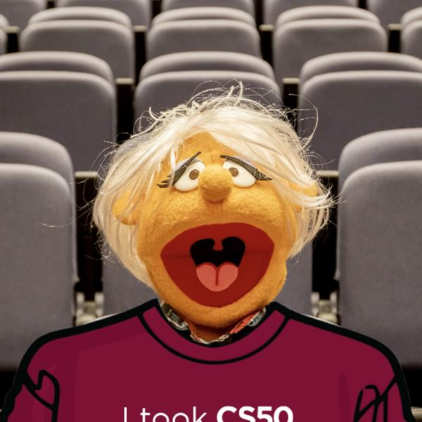
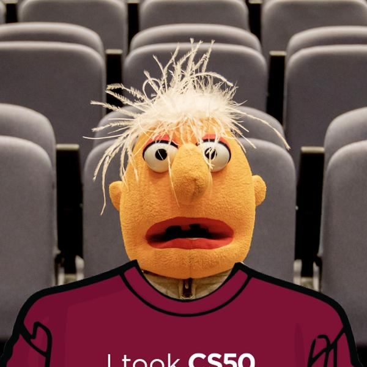
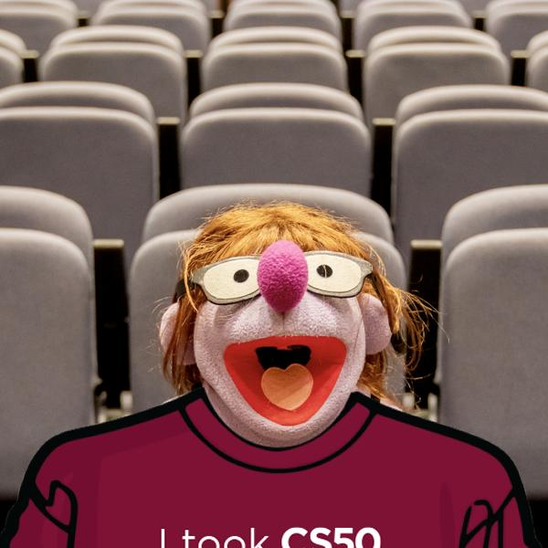

CS50 P-Shirt
After finishing CS50 itself, students on campus at Harvard traditionally receive their very own I took CS50 t-shirt. No need to buy one online, but like to try one on virtually?
In a file called shirt.py, implement a program that expects exactly two command-line arguments:
- in
sys.argv[1], the 姓名 (or path) of a JPEG or PNG to 阅读 (i.e., 打开) as input - in
sys.argv[2], the 姓名 (or path) of a JPEG or PNG to write (i.e., save) as output
The program should then overlay shirt.png (which has a transparent 背景) on the input after resizing and cropping the input to be the same size, saving the result as its output.
{kind=link}
打开 the input with Image.open, per pillow.readthedocs.io/en/stable/reference/Image.html#PIL.Image.打开, resize and crop the input with ImageOps.fit, per pillow.readthedocs.io/en/stable/reference/ImageOps.html#PIL.ImageOps.fit, using default values for method, bleed, and centering, overlay the shirt with Image.paste, per pillow.readthedocs.io/en/stable/reference/Image.html#PIL.Image.Image.paste, and save the result with Image.save, per pillow.readthedocs.io/en/stable/reference/Image.html#PIL.Image.Image.save.
The program should instead exit via sys.exit:
- if the user does not specify exactly two command-line arguments,
- if the input’s and output’s names do not end in
.jpg,.jpeg, or.png, case-insensitively, - if the input’s 姓名 does not have the same extension as the output’s 姓名, or
- if the specified input does not exist.
Assume that the input will be a photo of someone posing in just the right way, like these demos, so that, when they’re resized and cropped, the shirt appears to fit perfectly.
If you’d like to run your program on a photo of yourself, first drag the photo over to VS Code’s file explorer, into the same folder as shirt.py. No need to 提交 any photos with your code. But, if you would like, you’re 欢迎 (but not expected) to share a photo of yourself wearing your virtual shirt in any of CS50’s 社区!
提示
- 笔记 that you can determine a file’s extension with
os.path.splitext, per docs.python.org/3/library/os.path.html#os.path.splitext. - 笔记 that
opencanraiseaFileNotFoundError, per docs.python.org/3/library/exceptions.html#FileNotFoundError. - 笔记 that the
Pillowpackage comes with quite a few classes and methods, per pypi.org/项目/Pillow. You might find its handbook and reference helpful to skim. You can install the package with:pip install PillowYou can 打开 an image (e.g.,
shirt.png) with code like:shirt = Image.open("shirt.png")You can get the width and height, respectively, of that image as a
tuplewith code like:size = shirt.sizeAnd you can overlay that image on top of another (e.g.,
photo) with code likephoto.paste(shirt, shirt)wherein the first
shirtrepresents the image to overlay and the secondshirtrepresents a “mask” indicating which pixels inphototo update. - 笔记 that you can 打开 an image (e.g.,
shirt.png) in VS Code by runningcode shirt.pngor by double-clicking its icon in VS Code’s file explorer.
Demo
Before
{kind=link}
{kind=link}
{kind=link}
After



Before You Begin
Log into cs50.dev, click on your terminal window, and execute cd by itself. You should find that your terminal window’s prompt resembles the below:
$
下一页 execute
mkdir shirt
to make a folder called shirt in your codespace.
Then execute
cd shirt
to change directories into that folder. You should now see your terminal prompt as shirt/ $. You can now execute
code shirt.py
to make a file called shirt.py where you’ll write your program. Be sure to run
wget https://cs50.harvard.edu/python/2022/psets/6/shirt/shirt.png
to 下载 shirt.png. Also be sure to run
wget https://cs50.harvard.edu/python/2022/psets/6/shirt/muppets.zip
to 下载 muppets.zip into your folder. You can run
unzip muppets.zip
to extract a collection of muppet photos!
How to Test
Here’s how to test your code manually:
- Run your program with
python shirt.py. Your program should exit usingsys.exitand provide an error message:Too few command-line arguments - Be sure to 下载 muppets.zip and extract a collection of muppet photos using
unzip muppets.zip. Run your program withpython shirt.py before1.jpg before2.jpg before3.jpg. Your program should output:Too many command-line arguments - Run your program with
python shirt.py before1.jpg invalid_format.bmp. Your program should exit usingsys.exitand provide an error message:Invalid output - Run your program with
python shirt.py before1.jpg after1.png. Your program should exit usingsys.exitand provide an error message:Input and output have different extensions - Run your program with
python shirt.py non_existent_image.jpg after1.jpg. Your program should exit usingsys.exitand provide an error message:Input does not exist - Run your program with
python shirt.py before1.jpg after1.jpg. Assuming you’ve downloaded and unzipped muppets.zip, your program should create an image like the below:
You can execute the below to check your code using check50, a program that CS50 will use to test your code when you 提交. But be sure to test it yourself as well!
check50 cs50/problems/2022/python/shirt
Green smilies mean your program has passed a test! Red frownies will indicate your program output something unexpected. Visit the URL that check50 outputs to see the input check50 handed to your program, what output it expected, and what output your program actually gave.
如何提交
In your terminal, execute the below to 提交 your work.
submit50 cs50/problems/2022/python/shirt